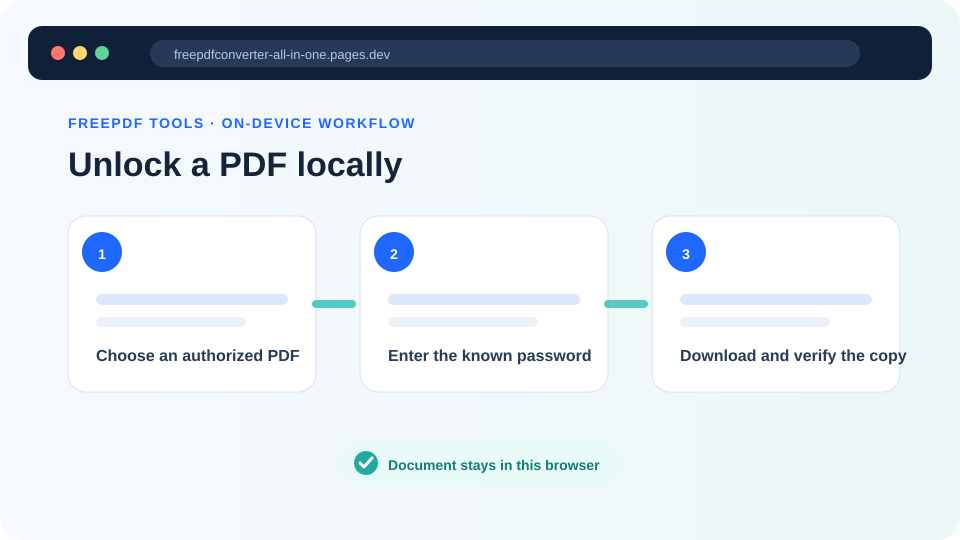
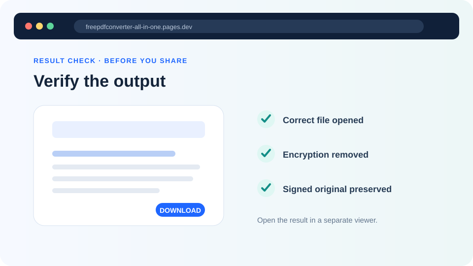

How to unlock a password-protected PDF safely
Remove encryption with a password you know, understand the two common kinds of PDF passwords and verify the new copy before using it.
Updated August 11, 2026 · By FreePDF Tools · 6 minute read


Open passwords and permission restrictions are different
An open password, sometimes called a user password, must be entered before a PDF viewer can display the document. You need that password to unlock the file. A permissions password, sometimes called an owner password, can restrict printing, copying or editing while still allowing the PDF to open. When its user password is empty, the local tool may be able to create an unrestricted copy with the password field left blank.
PDF viewer restrictions are not the same as account passwords, digital-rights-management services or certificate encryption. This tool supports common PDF standard password security; it does not attack an unknown password or bypass an external access system.
How to remove a known password without uploading the PDF
- Keep the protected source file and make sure you are authorized to change it.
- Open the Unlock PDF tool and choose the document.
- Enter the exact open password. Passwords are case-sensitive. For a PDF that opens normally but blocks editing, try a blank password.
- Confirm your authorization and select Unlock PDF. A self-hosted QPDF WebAssembly worker creates the new file on your device.
- Open the downloaded
-unlocked.pdfcopy in a separate viewer. Confirm that it opens without a prompt.
Have the correct password?
Create an unencrypted copy locally with no account, paid tier or document upload.
Why signed PDFs need special care
A digital signature covers a specific sequence of PDF bytes. Removing encryption writes a new sequence even if every visible page appears unchanged, so existing signatures normally become invalid in the unlocked copy. Keep the original signed file and its password. If a regulator, employer or recipient requires a valid signature, ask which approved workflow they accept before changing the document.
Unlocking also does not remove malware, repair broken content or prove that the document is trustworthy. Treat an unlocked download with the same caution as its source.
A practical output checklist
- Close the original so you do not mistake its already-open session for the unlocked copy.
- Open the new filename and confirm that no password prompt appears.
- Check the page count and inspect the first, middle and last pages.
- Test important forms, attachments, bookmarks and links.
- Keep the protected or signed original until the new copy is no longer needed.
If the tool rejects a known password, check capitalization and keyboard layout first. The file may instead use certificate security, an unsupported security handler or damaged PDF structures. In that case, use the application that created the document or ask its owner for a compatible copy.